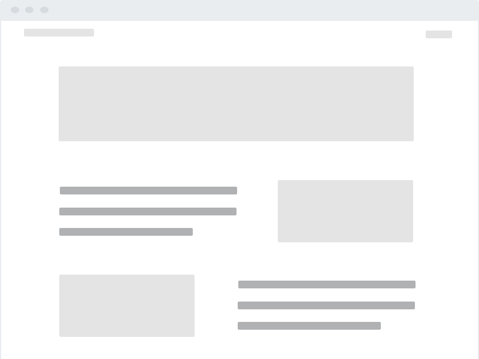

team
having been reached out to by blueberryx's co-founder, i onboarded to direct redesigns for the web experience. working remotely with blueberry engineers and cto, i redesigned their existing user sign up flow

ideation
blueberry sought to increase user sign ups. after analyzing the existing flow, i modified touch points to reduce "journey-clutter," directing users with more meaningful content and enganging click-throughs with simplified CTAs

problem
given that users were going through a rather complex journey, i sought to simplify the route from landing to sign up. overall screen numbers were reduced, with only meaningful content and actions available to direct the user journey

wireframing
simplifying the extant landing page, i wireframed a solution facilitating smoother flow from tile-to-tile. visual assets and content regions held similar real eatate, but maintained less detailed content

prototyping
minimizing the amount of visual, copy, and journey-based clutter, we reduced the overall flow complexity to direct users to our end goal with simplicity and ease

usability testing
users were tested in-person or online via video chat while screen sharing. unfamiliar users noted that they felt the design did little to entice them to sign up for a membership. brand-familiar users, however, noted that design was simple, easy to navigate, and fit with the expected product experience and brand aesthetic

feature prioritization
providing succinct, organized information about product incentives proved to be sufficient to engage new users across groups. expanding on product features or functionality did not necessarily improve the user experience

final prototype
a/b testing indicated that these design changes were correlated with significantly increased membership sign ups for the BlueberryX product

product
a simplified sign up flow seamlessly leading users through BlueberryX's online brand experience